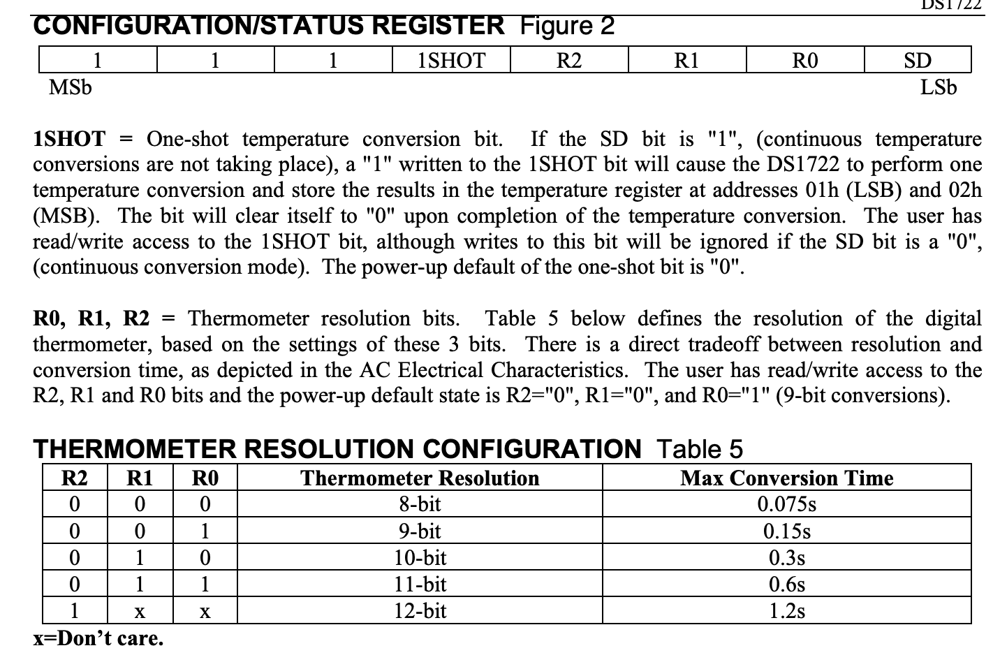

Lab 6: The Internet of Things and Serial Peripheral Interface
Introduction
In this lab we were tasked with creating an Internet of Things (IoT) device that displayed the temperature of the lab when requested and could control an LED connected to our MCU.
Lab Overview
The goal of this lab was to learn how to tie together multiple different components in conjunction with our MCU to create the desired IoT device. We used an ESP8266 which is a Wi-Fi microcontroller with pre-written web server code to host webpage. The MCU would then communicate with the webpage over UART allowing the MCU to read and write data to the ESP8266 and change the webpage. The MCU would also communicate with a DS1722 Digital Thermometer over SPI synchonously recieving temperature data and sending it over UART to the page.
The Temperature Sensor
Referenced above this lab used a DS1722 Digital Thermometer described in the image below.
This sensor can interface in both SPI and 3-wire interface. The MCU connected to the SCLK, CE, SDO, and SDI which connected to the SPI clock initiated on the MCU, a GPIO out pin, a MISO pin, and a MOSI pin respectively. When using SPI the sensor has the following registers.
The SPI system configured for this lab sent and recieved 8 bits of data. For reading the temperature from the sensor it was slightly different the SPI first needed to write the 8 bit read address (either 0x01 or 0x02) and then send over 0x0 and read what the sensor outputs. Since the sensor only outputs 8 bits but the temperature is given in 16 bits you must call 0x01 and 0x02 which relate to the LSB and MSB data that need to be concatenated and then converted into a decimal. When writing to the configuration register the SPI needed to write 0x80 first to tell the sensor the specific location and then write the 8 bit configuration stream according to how many bits of precision you want from 8 to 12 bits.

MCU Design
In this lab our MCU had two jobs. The first was to send data to the webpage over UART to tell it what to display and allow the webpage to send requests to the MCU. In the MCU source code the main function begins by sending the Wi-Fi chip some HTML code for a webpage inlcuding the temperature reading and configuration settings as well as polls to control the LED and waiting for it to respond. When it does respond the MCU looks to see if it was a Temperature configuration request or LED request and then calls the respective code to either light up the LED or send an SPI signal to change the configuration register resolution and read the SPI temperature and then displays it on the webpage. On the webpage there are five buttons for temperature resolution ranging from 8 bit to 12 bit mode.
SPI SETUP
To setup up SPI on the MCU the we first had to configure the GPIO pins for MOSI, MISO, and SCK pins. We then configured CPI_CR1 includign setting the baud rate, clock phase, clock polarity, full duplex, and setting if the MCU is acting as the master or the slave. From there the amount of bits transfered on SPI was set to 8 bits and the frame format was set to SPI motorola mode.
After we succesfully initiatied SPI we had to make a function to read and write to the temperature sensor using SPI. In this function then program waited for the transmit buffer to be empty TXE and then sent accross the 8 bit message we wanted to transfer. One unique feature was that the data register that hold the SPI data is 16 bits instead of 8. This meant if we tried to write an 8 bit message to this register the rest of the bits would be zero. To ammend this a pointer to the register was created of type uint8_t and the 8 bit data was then copied to the location the pointer pointed to. The program would then wait until the recieve buffer was not empty RXNE and return the data in the recieve buffer as a char.
Calculations
The only calculation in this lab was calulating the decimal temperature from the 8 to 12 bit data we recieve from the sensor using the following conversion.
While the data sheet claims that the most significant bit is the sign in reality it uses two’s complement and the most significant bit represents -2^15. To compute the first 8 temperature bits I simply would check if the first bit was high or low by shifting and then add the decimal representation of the next 7 bits to either 0 or -128. For the second set of 8 bits I would mask each bit and check if it was high or low and then add the appropriate fraction.
Testing
SPI TESTING on oscilloscope
Once the MCU temperature code finally was able to interface with the UART webpage it was time to validate. Launching the website in the Digital Design lab I found that the webpage would show a reading around 24 C which translates to 75 F. This is right around room temperature where I expected it to be and shows that the temperature converting function works well. One thing that was interesting is when trying to change resolution it often took two clicks to get the resolution to change. We believe this is because it was still changing the configuration and reading the converting the new temperature before our webpage could request it. I tried to fix this by adding a 1.2s delay which corresponds to the conversion time of the highest resolution reading but unfortunately our webpage would time out as it wasn’t getting data frequently enough.
Outcome
From the image below you can see how the website has buttons to select the resolution of the temperature sensor as well as properly displaying the temperature at the bottom of the page while keeping all the LED controls. This lab provideded a nice insight to how webpages work and how we can communicate with them using USART. Additionally I feel much more comfortable using SPI.
Time in Lab this week: 22 Hours